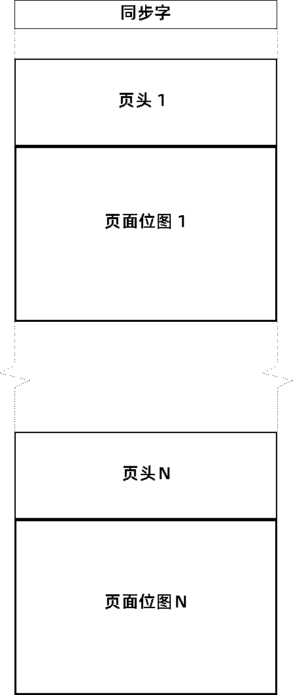

|
CUPS 光栅文件是设备相关的光栅图像文件，包含 PostScript 页面设备字典和文档中每个页面的设备相关光栅图像。这些文件用于将光栅数据从 PostScript 和图像文件 RIP 传输到设备相关筛选器，这些筛选器将光栅数据转换为可打印格式。
CUPS 1.0 和 1.1 使用了光栅格式的版本 1 。CUPS 1.2 及更高版本使用版本 2（压缩）和版本 3（未压缩），这是版本 1 光栅格式的超集。CUPS 光栅的所有三个版本都是可流化格式，使用 CUPS 成像 API（ cupsRaster* 函数）的应用程序可以读取所有格式，而无需更改代码。
CUPS 光栅文件注册的 MIME 媒体类型为 application/vnd.cups-raster 。
图1，“光栅组织”，显示所有 CUPS 光栅文件的常规组织。每个文件都以一个 32 位同步字开头，后跟零个或多个页面。每个页面由页头（ PostScript 页面设备字典和光栅特定值）和页面的位图图像组成。
|  |
每个页面位图按页头中的 cupsBitsPerColor 、 cupsBytesPerLine 、 cupsColorOrder 、 cupsColorSpace 、 cupsHeight 和 cupsWidth 值存储。纸张正面的像素始终从左到右、从上到下存储。进行双面打印时，根据 PPD 文件中 cupsBackSide 关键字（“Normal” 、 “ManualTumble” 、 “Rotated” 或 “Flipped”）的值以及页头中的 Tumble 值（“true” 或 “false”），纸张背面的像素可能会以不同的方式存储图2，“页面位图”，显示了每个组合的像素顺序。
版本 1 光栅文件以 32 位同步字开头：对于大端体系结构，为 0x52615374（“RaSt”），对于小端体系结构，为 0x74536152（“tSaR”）。光栅文件的编写器将使用本机字序，而读取器负责检测反转的字序文件并根据需要交换字节。CUPS 成像 API 光栅函数自动执行此功能。
同步字后面是一系列光栅页面。每个页面都以页面设备字典标题开始，紧接着是该页面的（未压缩/原始）光栅数据。
| 比特 | 类型 | 说明 | 值 |
|---|---|---|---|
| 0-63 | C String | 媒体类 | 媒体类字符串 |
| 64-127 | C String | 媒体颜色 | 媒体颜色字符串 |
| 128-191 | C String | 媒体类型 | 媒体类型字符串 |
| 192-255 | C String | OutputType | 输出类型字符串 |
| 256-259 | Unsigned Integer | AdvanceDistance | 0 to 232 - 1 points |
| 260-263 | Unsigned Integer | AdvanceMedia | 0 = 不要提前滚动 1 = 在文件后向前滚动 2 = 在任务后向前滚动 3 = 在设置后向前滚动 4 = 在每页后向前滚动 |
| 264-267 | Unsigned Integer | Collate | 0 = 不要核对副本 1 = 校对副本 |
| 268-271 | Unsigned Integer | CutMedia | 0 = 不要裁切介质 1 = 在文件后裁切 2 = 在任务后裁切 3 = 在设置后裁切 4 = 在每页后裁切 |
| 272-275 | Unsigned Integer | Duplex | 0 = 单面打印 1 = 双面打印 |
| 276-283 | Unsigned Integers (2) | HWResolution | 水平和垂直分辨率，单位为每英寸点数。 |
| 284-299 | Unsigned Integers (4) | ImagingBoundingBox | 四个整数，以点表示页面边界框的左、下、右和上位置 |
| 300-303 | Unsigned Integer | InsertSheet | 0 = 不要插入分隔页 1 = 插入分隔页 |
| 304-307 | Unsigned Integer | Jog | 0 = Do no jog pages 1 = Jog pages after file 2 = Jog pages after job 3 = Jog pages after set |
| 308-311 | Unsigned Integer | LeadingEdge | 0 = 顶边优先 1 = 右边优先 2 = 下边优先 3 = 左边优先 |
| 312-319 | Unsigned Integers (2) | Margins | 以点为单位的图像左原点和下原点 |
| 320-323 | Unsigned Integer | ManualFeed | 0 = 不要手动进纸 1 = 手动进纸 |
| 324-327 | Unsigned Integer | MediaPosition | 输入从 0 到 N 的槽位号 |
| 328-331 | Unsigned Integer | MediaWeight | 介质重量（单位：克/平方米），0 = 打印机默认值 |
| 332-335 | Unsigned Integer | MirrorPrint | 0 = 不要镜像打印 1 = 镜像打印 |
| 336-339 | Unsigned Integer | NegativePrint | 0 = 不要反转打印 1 = 反转打印 |
| 340-343 | Unsigned Integer | NumCopies | 0 to 232 - 1, 0 = 打印机默认值 |
| 344-347 | Unsigned Integer | Orientation | 0 = 不旋转页面 1 = 逆时针旋转页面 2 = 翻转页面 3 = 顺时针旋转页面 |
| 348-351 | Unsigned Integer | OutputFaceUp | 0 = 输出面朝下 1 = 输出面朝上 |
| 352-359 | Unsigned Integers (2) | PageSize | 以点为单位的宽度和长度 |
| 360-363 | Unsigned Integer | Separations | 0 = Print composite image 1 = Print color separations |
| 364-367 | Unsigned Integer | TraySwitch | 0 = 如果所选托盘为空，请勿更换托盘 1 = 如果所选托盘为空，则更改托盘 |
| 368-371 | Unsigned Integer | Tumble | 0 = 双面打印时不要旋转偶数页 1 = 双面打印时旋转偶数页 |
| 372-375 | Unsigned Integer | cupsWidth | 页面图像的宽度（像素） |
| 376-379 | Unsigned Integer | cupsHeight | 页面图像的高度（像素） |
| 380-383 | Unsigned Integer | cupsMediaType | Driver-specific 0 to 232 - 1 |
| 384-387 | Unsigned Integer | cupsBitsPerColor | 1, 2, 4, 8 bits for version 1 raster files 1, 2, 4, 8, and 16 bits for version 2/3 raster files |
| 388-391 | Unsigned Integer | cupsBitsPerPixel | 1 to 32 bits for version 1 raster files 1 to 240 bits for version 2/3 raster files |
| 392-395 | Unsigned Integer | cupsBytesPerLine | 1 to 232 - 1 bytes |
| 396-399 | Unsigned Integer | cupsColorOrder | 0 = 粗像素 (CMYK CMYK CMYK) 1 = 带状像素 (CCC MMM YYY KKK) 2 = 平面像素 (CCC... MMM... YYY... KKK...) |
| 400-403 | Unsigned Integer | cupsColorSpace | 0 = gray (device, typically sRGB-based) 1 = RGB (device, typically sRGB) 2 = RGBA (device, typically sRGB) 3 = black 4 = CMY 5 = YMC 6 = CMYK 7 = YMCK 8 = KCMY 9 = KCMYcm 10 = GMCK 11 = GMCS 12 = WHITE 13 = GOLD 14 = SILVER 15 = CIE XYZ 16 = CIE Lab 17 = RGBW (sRGB) 18 = sGray (gray using sRGB gamma/white point) 19 = sRGB 20 = AdobeRGB 32 = ICC1 (CIE Lab with hint for 1 color) 33 = ICC2 (CIE Lab with hint for 2 colors) 34 = ICC3 (CIE Lab with hint for 3 colors) 35 = ICC4 (CIE Lab with hint for 4 colors) 36 = ICC5 (CIE Lab with hint for 5 colors) 37 = ICC6 (CIE Lab with hint for 6 colors) 38 = ICC7 (CIE Lab with hint for 7 colors) 39 = ICC8 (CIE Lab with hint for 8 colors) 40 = ICC9 (CIE Lab with hint for 9 colors) 41 = ICCA (CIE Lab with hint for 10 colors) 42 = ICCB (CIE Lab with hint for 11 colors) 43 = ICCC (CIE Lab with hint for 12 colors) 44 = ICCD (CIE Lab with hint for 13 colors) 45 = ICCE (CIE Lab with hint for 14 colors) 46 = ICCF (CIE Lab with hint for 15 colors) 48 = Device1 (DeviceN for 1 color) 49 = Device2 (DeviceN for 2 colors) 50 = Device3 (DeviceN for 3 colors) 51 = Device4 (DeviceN for 4 colors) 52 = Device5 (DeviceN for 5 colors) 53 = Device6 (DeviceN for 6 colors) 54 = Device7 (DeviceN for 7 colors) 55 = Device8 (DeviceN for 8 colors) 56 = Device9 (DeviceN for 9 colors) 57 = DeviceA (DeviceN for 10 colors) 58 = DeviceB (DeviceN for 11 colors) 59 = DeviceC (DeviceN for 12 colors) 60 = DeviceD (DeviceN for 13 colors) 61 = DeviceE (DeviceN for 14 colors) 62 = DeviceF (DeviceN for 15 colors) |
| 404-407 | Unsigned Integer | cupsCompression | Driver-specific 0 to 232 - 1 |
| 408-411 | Unsigned Integer | cupsRowCount | Driver-specific 0 to 232 - 1 |
| 412-415 | Unsigned Integer | cupsRowFeed | Driver-specific 0 to 232 - 1 |
| 416-419 | Unsigned Integer | cupsRowStep | Driver-specific 0 to 232 - 1 |
版本 2 光栅文件以 32 位同步字开头：对于大端体系结构，为 0x52615332（“RaS2”），对于小端体系结构，为 0x32536152（“2SaR”）。光栅文件的编写器将使用本机字序，而读取器负责检测反转的字序文件并根据需要交换字节。CUPS 成像 API 光栅函数自动执行此功能。
同步字后面是一系列光栅页面。每个页面都以版本 2 页面设备字典标题开始，紧接着是该页面的压缩光栅数据。
| 比特 | 类型 | 说明 | 值 |
|---|---|---|---|
| 0-419 | Version 1 header data | 见表1 | |
| 420-423 | Unsigned Integer | cupsNumColors | 1 到 15 的颜色 |
| 424-427 | IEEE Single Precision | cupsBorderlessScalingFactor | 0.0 或 1.0 或之后 |
| 428-435 | IEEE Single Precision (2) | cupsPageSize | 以点为单位的宽度和长度 |
| 436-451 | IEEE Single Precision (4) | cupsImagingBBox | 四个浮点数，以点表示页面边界框的左、下、右和上位置 |
| 452-515 | Unsigned Integers (16) | cupsInteger | 16 驱动程序定义的整数值 |
| 516-579 | IEEE Single Precision (16) | cupsReal | 16 驱动程序定义的浮点值 |
| 580-1603 | C Strings (16x64) | cupsString | 16 驱动程序定义的字符串 |
| 1604-1667 | C String | cupsMarkerType | 墨水/碳粉类型字符串 |
| 1668-1731 | C String | cupsRenderingIntent | 渲染意图字符串 |
| 1732-1795 | C String | cupsPageSizeName | PPD 中的页面大小名称/关键字字符串 |
版本 2 的光栅数据使用类似 PackBits 的算法进行压缩。根据 cupsColorOrder 设置，行被分组为整数个颜色值：
| CUPS 颜色顺序 | 每个颜色值的字节数 |
|---|---|
| 0 (chunky) | (cupsBitsPerPixel + 7) / 8 |
| 1 (banded) | (cupsBitsPerColor + 7) / 8 |
| 2 (planar) | (cupsBitsPerColor + 7) / 8 |
光栅数据的每一行都以 1 到 256 的重复计数开始，该重复计数使用单个字节 “count - 1” 进行编码。
重复计数后，该行的整个颜色值使用类似 PackBits 的运行长度编码算法进行运行长度编码：1 到 128 个重复颜色使用 “count - 1” 的初始字节和颜色值字节进行编码，而 2 到 128 个非重复颜色使用 “257 - count” 的初始字节进行编码后跟颜色值字节。
例如，图3，“示例图像”中显示的 8 x 8 24位 sRGB 图像将被编码为以下 89 个八位字节：
%x00 %x00.FF.FF.FF %x02.FF.FF.00 %x03.FF.FF.FF %x00 %xFE.FF.FF.00.00.00.FF.FF.FF.00 %x02.FF.FF.FF %x00.00.FF.00 %x00.FF.FF.FF %x00 %x01.FF.FF.00 %x02.FF.FF.FF %x02.00.FF.00 %x00 %x02.FF.FF.00 %x02.FF.FF.FF %x00.00.FF.00 %x00.FF.FF.FF %x00 %x00.FF.FF.FF %x02.FF.FF.00 %x03.FF.FF.FF %x00 %x07.FF.FF.FF %x01 %x07.FF.00.00
第一行（%x00）包含 1 个白色像素（%x00.FF.FF.FF）、3 个黄色像素（%x02.FF.FF.00）和 4 个白色像素（%x03.FF.FF.FF）。
第二行（%x00）包含一系列黄色 + 蓝色 + 黄色像素（%xFE.FF.FF.00.00.FF.FF.FF.00）、3 个白色像素（%x02.FF.FF.FF）、1 个绿色像素（%x00.00.FF.00）和 1 个白色像素（%x00.FF.FF.FF）。
第三行（%x00）包含 2 个黄色像素（%x01.FF.FF.00）、3 个白色像素（%x02.FF.FF.FF）和 3 个绿色像素（%x02.00.FF.00）。
第四行（%x00）包含 3 个黄色像素（%x02.FF.FF.00）、3 个白色像素（%x02.FF.FF.FF）、1 个绿色像素（%x00.00.FF.00）和 1 个白色像素（%x00.FF.FF.FF）。
第五行（%x00）包含 1 个白色像素（%x00.FF.FF.FF）、3 个黄色像素（%x02.FF.FF.00）和 4 个白色像素（%x03.FF.FF.FF）。
第六行（%x00）包含 8 个白色像素（%x07.FF.FF.FF）。
第七行和第八行（%x01）包含 8 个红色像素（%x07.FF.00.00）。
版本 3 光栅文件以 32 位同步字开头：对于大端体系结构，为 0x52615333（“RaS3”），对于小端体系结构，为 0x33536152（“3SaR”）。光栅文件的编写器将使用本机字序，而读取器负责检测反转的字序文件并根据需要交换字节。CUPS 成像 API 光栅函数自动执行此功能。
同步字后面是一系列光栅页面。每个页面以版本2页面设备字典标题开始，紧接着是该页面的未压缩/原始光栅数据。
以下各节介绍 CUPS 光栅文件中颜色值的编码和解码。通常，颜色被压缩到最小字节数中，并特别考虑编码和访问的效率。多字节值以本机字节顺序存储，并在使用 CUPS 成像 API 读取它们时根据需要自动交换。
分块顺序提供压缩在单个位置的像素值。每种颜色具有 8 位或更多位的像素值按顺序存储为颜色数组，例如，对于 CUPS_CSPACE_RGB 您将看到 8/16 位的红色、蓝色、绿色、红色、绿色、蓝色等。每种颜色小于 8 位的像素值被打包在一起，如表 4 所示。 多字节像素值以本机字顺序存储，就像 16 位颜色值一样。
| 位 | 1-color | 3-color | 4-color | 6-color |
|---|---|---|---|---|
| 1 | W/W/W/W/W/W/W/W | 0RGB/0RGB | CMYK/CMYK | 00KCMYcm |
| 2 | WW/WW/WW/WW | 00RRGGBB | CCMMYYKK | N/A |
| 4 | WWWW/WWWW | 0000RRRRGGGGBBBB (multi-byte) |
CCCCMMMMYYYYKKKK (multi-byte) |
N/A |
带状顺序将每种颜色作为单独的数据行提供。一条线的每个颜色平面都是按顺序写入的，例如，对于 CUPS_CSPACE_CMYK 颜色空间，您将看到一条线的所有青色像素，然后是该线的洋红、黄色和黑色像素。对页面上的所有行重复此操作。颜色值从最高有效位（MSB）开始打包。
平面顺序使用共享页头将每种颜色作为单独的数据页提供。页面的每个颜色平面都是按顺序写入的，例如，对于 CUPS_CSPACE_CMYK颜色空间，您将看到页面的所有青色像素，然后是该页面的洋红、黄色和黑色像素。颜色值从最高有效位（MSB）开始打包。每行从 8 位边界开始。
此颜色空间提供专用的黑色文本通道，并为 RGB 颜色通道使用 sRGB 颜色空间定义和白点。对于文本（或“true”）黑色，白色通道为 0 ，否则它必须包含最大颜色值：1 表示 1 位，3 表示 2 位，15 表示 4 位，255 表示 8 位，或 65535 表示 16 位。
当 cupsBitsPerColor 为 1 时，将提供 6 个颜色平面 － 黑色、青色、品红、黄色、浅青色和浅品红。当 cupsBitsPerColor 大于 1 时，将使用 CUPS_CSPACE_KCMY 颜色空间提供 4 个颜色平面。
当 cupsColorOrder 是 CUPS_ORDER_CHUNKED 时，位 5 对应于黑色，位 0 对应于浅品红。对于 CUPS_ORDER_BANDED 和 CUPS_ORDER_PLANAR ，每个颜色平面都单独编码。
这些颜色空间将带有 D65 白点的 CIE Lab 颜色值映射为每种颜色分块（CUPS_ORDER_CHUNKED）格式的 8 位或 16 位；不支持带状（CUPS_ORDER_BANDED）和平面（CUPS_ORDER_PLANAR）颜色顺序。
使用以下公式对值进行编码和解码：
这些颜色空间将带有 D65 白点的 CIE XYZ 颜色值映射为每种颜色块 8 位或 16 位（CUPS_ORDER_CHUNKED）格式；不支持带状（CUPS_ORDER_BANDED）和平面（CUPS_ORDER_PLANAR）颜色顺序。
使用以下公式对值进行编码和解码：
XYZ 值的比例因子为 1/1.1 ，8 位值为 231.8181 ，16 位值为 59577.2727 。这允许在从 RGB 转换时 XYZ 值稍微溢出，从而提高精度。